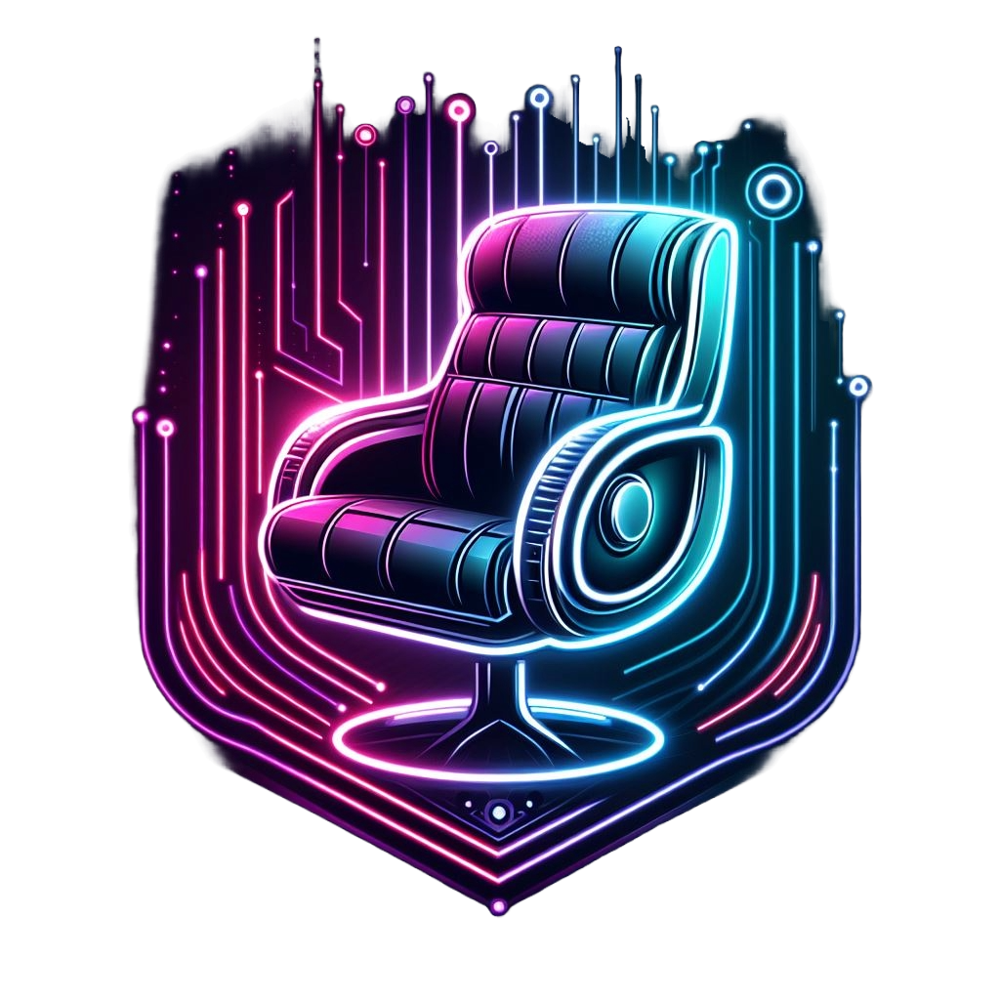

في Cyber chair، نؤمن بأن الكرسي أكثر من مجرد قطعة أثاث؛ إنه رفيقك في كل لحظة، سواء كنت تعمل، تتعلم، تسترخي، أو تجتمع مع الأحباء. نحن نقدم تشكيلة واسعة من الكراسي التي تجمع بين الأناقة العصرية والراحة القصوى، مصممة لتناسب كل أسلوب حياة وكل غرفة في منزلك.
نسعى لإحداث ثورة في عالم الأثاث من خلال تقديم تصاميم مبتكرة تلبي احتياجات العصر الحديث. نحن نتبنى التكنولوجيا والابتكار لنقدم لكم كراسي ليست فقط جميلة، بل ذكية ومريحة.
وراء كل كرسي، هناك فريق من المصممين والحرفيين المتفانين الذين يعملون بلا كلل لتحقيق رؤيتنا. نحن نفخر بفريقنا الذي يجمع بين الخبرة والشغف لإنتاج كراسي تستحق أن تكون جزءًا من قصص حياتكم.
اكتشف مجموعتنا الواسعة واختر الكرسي الذي يعبر عنك. في Cyber chair، نحن هنا لنجعل كل لحظة تقضيها جالسًا تجربة لا تُنسى.